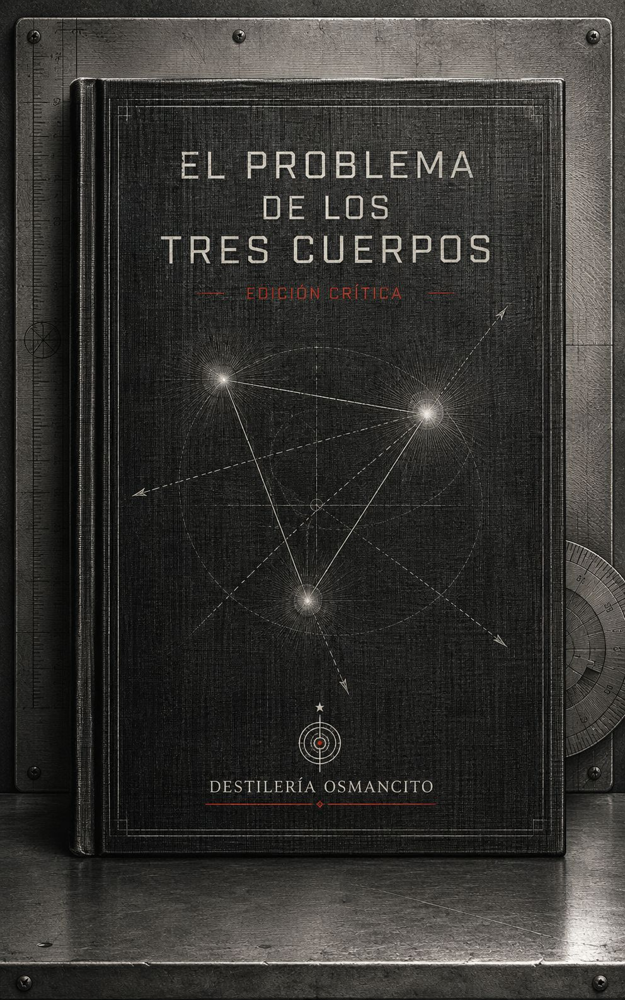
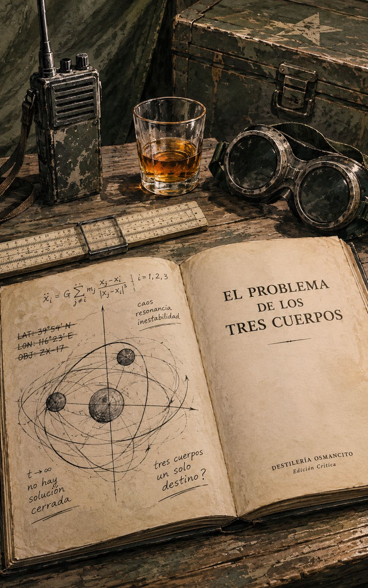
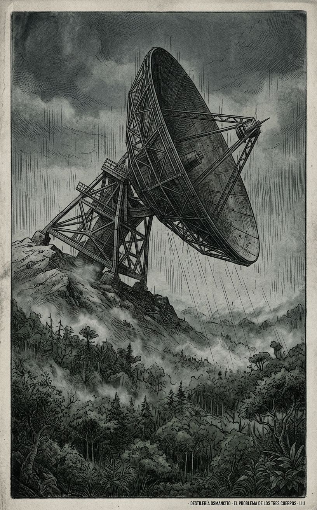
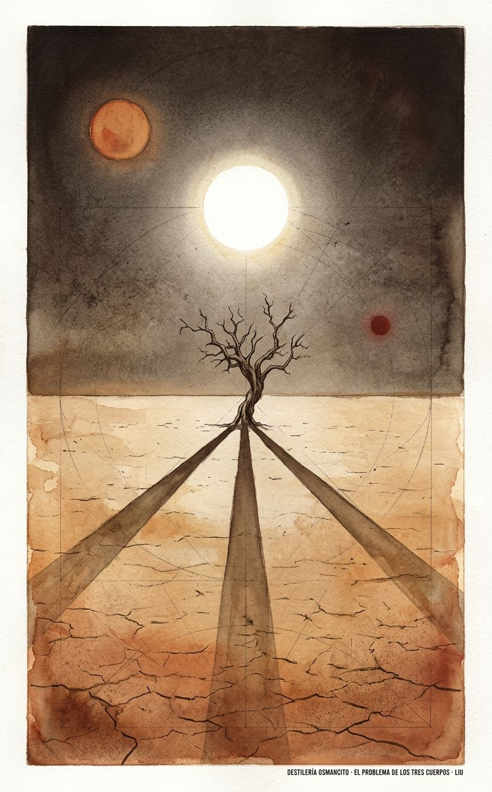
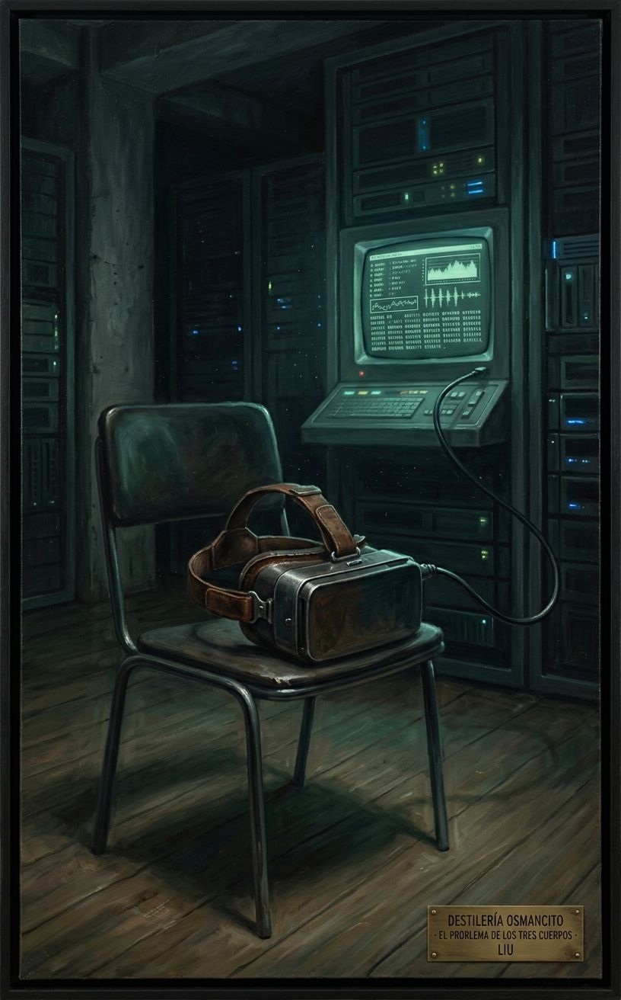

Un físico duda de las leyes de la física y un radiotelescopio construido para atacar satélites termina, sin que nadie lo planee así, invitando a un final. La traición que desencadena todo no nace del odio a la especie humana en abstracto, sino de haber visto morir a un padre a manos de quienes gritaban consignas de amor a la humanidad. Y la civilización que responde al llamado no es monstruosa: está agotada, como la que la llama.
Llega pesado en la mano izquierda, con el peso parejo de algo que no se sabe todavía si es un ladrillo o una bomba de tiempo.
Este corpus no es una historia de contacto: es una historia de invitación. Antes de que aparezca el alien, aparece la razón para llamarlo, y la razón es humana, doméstica, de 1967. Nombrar lo que es este corpus —una novela que hace pasar cuarenta años de historia china por el cuello de botella de una ecuación sin solución— es distinto de resumir lo que dice: no habla de invasión, habla de la lógica que hace la invasión deseable.
Título — El Problema de los Tres Cuerpos (título original: 三体, Sān Tǐ) Autor — Liu Cixin Año — 2008 (publicación original en China); 2014 (edición en inglés, traducción de Ken Liu) Género — Ciencia ficción dura, con estructura de thriller de investigación Extensión estimada — 117.927 palabras; aproximadamente 472 páginas (250 palabras/página); 35 capítulos organizados en tres partes, más postscripts del autor y del traductor Idioma original — Chino Palabra más frecuente con contenido — Civilization. Coincide exactamente con lo que el corpus declara ser: no una novela de personajes ni de acontecimientos, sino una novela sobre el destino de civilizaciones —la china bajo la Revolución Cultural, la humana frente a lo ajeno, la trisolariana bajo su propio sol asesino. El dato confirma la ambición explícita del libro más que la desmiente.
Durante la Revolución Cultural china, la astrofísica Ye Wenjie presencia el asesinato de su padre por Guardias Rojos y, años después, desde una base militar secreta, envía al espacio el primer mensaje humano capaz de ser respondido por una civilización extraterrestre. Cuarenta años más tarde, el investigador Wang Miao es reclutado para averiguar por qué una serie de científicos de élite se están suicidando, y su investigación lo conduce a un videojuego de realidad virtual —Three Body— que reconstruye, a través de sucesivas civilizaciones destruidas, el problema físico irresoluble de un mundo con tres soles. Lo que Wang descubre es que el juego no es ficción: es el registro de un planeta real, Trisolaris, cuya civilización busca escapar de su sistema estelar caótico invadiendo la Tierra, invitada sin saberlo por la propia Ye Wenjie décadas atrás.
Ye Wenjie — astrofísica, hija de un físico asesinado durante la Revolución Cultural; origen de la traición que desencadena la trama. Wang Miao — investigador en nanomateriales, protagonista de la línea presente, jugador de Three Body. Shi Qiang (“Da Shi”) — detective de policía, contrapeso pragmático y antiintelectual frente al mundo científico. Ding Yi — físico teórico, pareja de Yang Dong, escéptico de las explicaciones fáciles. Yang Dong — física teórica, hija de Ye Wenjie, cuyo suicidio abre la investigación. Shen Yufei — física, miembro de Fronteras de la Ciencia, portavoz encubierta del Movimiento Tierra-Trisolaris. Mike Evans — heredero de una fortuna petrolera devenido ecologista radical, fundador del brazo que reclutará a Ye. Trisolaris — civilización alienígena que habita un sistema de tres soles sin órbitas estables, condenada a Épocas Caóticas impredecibles.
En 1967, durante la Revolución Cultural, Ye Zhetai, profesor de física en Tsinghua, muere linchado en una sesión de crítica pública por negarse a repudiar la relatividad de Einstein. Su hija, Ye Wenjie, es acusada injustamente de subversión por haber copiado una carta basada en Primavera Silenciosa de Rachel Carson, y es enviada a un campo de reeducación. Allí es reclutada —gracias a sus conocimientos de radioastronomía— para la Base Costa Roja, un proyecto militar secreto de defensa antisatélite disfrazado, que en realidad also opera como programa de búsqueda de vida extraterrestre. Traicionada por el sistema que la formó, presencia además la muerte de su esposo y de un comisario político durante una rebelión interna en la base. Décadas más tarde, ya como investigadora principal, Ye descubre cómo amplificar una señal mediante el propio Sol y logra el primer contacto: recibe una advertencia de un pacifista trisolariano —no respondas— y, pese a ello, responde, invitando conscientemente a la conquista de la Tierra como acto de desesperanza hacia la propia especie humana.
En el presente, mientras una serie de físicos de renombre se suicidan tras dejar notas que declaran que “la física no existe”, el nanomaterialista Wang Miao es reclutado por los servicios de inteligencia para infiltrar Fronteras de la Ciencia, la organización a la que pertenecían los científicos muertos. Wang comienza a ver una cuenta regresiva sobrenatural superpuesta a su visión, y descubre que puede detenerla deteniendo su propia investigación. Guiado por la física Shen Yufei, entra en Three Body, un videojuego de realidad virtual donde civilizaciones enteras —encarnadas por figuras como el Rey Wen de Zhou, Newton, Von Neumann, Qin Shi Huang, Copérnico, Einstein— intentan predecir el movimiento de tres soles y son destruidas una y otra vez por Épocas Caóticas: extremos de calor y frío imposibles de anticipar. El juego resulta ser una simulación pedagógica diseñada por los propios Trisolaranos para preparar a la humanidad para su llegada.
Wang, junto al detective Shi Qiang, descubre que Fronteras de la Ciencia es la fachada intelectual del Movimiento Tierra-Trisolaris (ETO), fundado por Ye Wenjie y Mike Evans —heredero petrolero convertido a un credo de “comunismo pan-especie” tras presenciar un derrame de crudo en su infancia—. El ETO se ha escindido en dos facciones: los Adventistas, que quieren la extinción de la humanidad como castigo por su autodestrucción; y los Redencionistas, que veneran a los Trisolaranos como salvadores. En una reunión de la organización, fuerzas del gobierno chino irrumpen; un intento de detonación nuclear fracasa y Ye Wenjie es arrestada.
Se revela que la flota trisolariana, tecnológicamente muy superior pero incapaz de cruzar el espacio salvo a una fracción de la velocidad de la luz, tardará cuatrocientos años en llegar a la Tierra —y que su verdadero temor no son las armas humanas, sino el potencial científico humano de superarlos en ese tiempo. Para neutralizarlo, despliegan sofones: protones de once dimensiones desplegados y grabados como supercomputadores, capaces de distorsionar los resultados de los aceleradores de partículas humanos e impedir así el avance de la física fundamental —sin poder, sin embargo, detener la investigación aplicada. En una operación conjunta internacional bautizada Guzheng, fuerzas de inteligencia interceptan el buque Judgment Day, base flotante del ETO, cortándolo con un nanomaterial ultrafino (“Hoja Voladora”) desarrollado por Wang, y recuperan la totalidad de las comunicaciones y datos técnicos trisolarianos. El libro cierra con Ye Wenjie, ya anciana, contemplando las ruinas de la Base Costa Roja y confirmando ante Wang que la decisión de responder al mensaje alienígena fue enteramente suya.
Primer contacto. Este corpus no tiembla de miedo ante lo alienígena: tiembla de vergüenza humana. Antes de llegar a los sofones, a las naves, a los cálculos del problema de los tres cuerpos, lo que se instala en el cuerpo del lector es una escena de linchamiento en un patio de universidad, y esa escena no se va. El libro tiene la temperatura de un informe técnico escrito por alguien que no ha dejado de sangrar por dentro: frío en la superficie, hirviendo en la fuente. No busca asustar con el monstruo de afuera —busca que el lector reconozca que el monstruo ya estuvo aquí, vestido de brazalete rojo, y que fue una hija quien, al final, decidió abrirle la puerta a otro.
¿Es posible confiar en una especie que ya demostró, ante testigos, que puede destruir a los suyos por una ecuación de física? El corpus nunca formula esta pregunta como tema declarado —el tema declarado es el contacto extraterrestre— pero la trabaja sin descanso a través del contraste entre la crueldad histórica documentada y la esperanza depositada, sin pruebas, en lo desconocido.
¿Qué le debe el individuo a la civilización que lo formó, cuando esa civilización lo ha traicionado primero? Ye Wenjie no actúa por ideología ni por cálculo: actúa por una herida específica, y el corpus nunca resuelve si eso la convierte en traidora, en profeta, o en las dos cosas sin contradicción.
La ciencia como objeto de fe y como objeto de terror ocurren simultáneamente en cada capítulo: los mismos personajes que mueren por no poder soportar que “la física no existe” son los que, párrafos después, encuentran en la física la única forma de belleza que el mundo aún les ofrece.
Parte I, “Silent Spring” (“Primavera silenciosa.”)
China, 1967. El capítulo abre sin introducir a nadie: la Unión Roja lleva dos días asediando la sede de la Brigada Veintiocho de Abril. Los sitiadores son veteranos, curtidos en las giras revolucionarias y en los mítines de Tiananmen; los sitiados son un par de cientos de Guardias Rojos más jóvenes y más temerarios, y dentro del edificio hay una docena de estufas de hierro cargadas de explosivos y conectadas por detonadores eléctricos — si alguien acciona el interruptor, mueren todos, revolucionarios y contrarrevolucionarios por igual. El comandante de la Unión Roja no teme a los defensores; teme esa posibilidad.
En ese contexto aparece, en lo alto del edificio, una muchacha agitando la bandera roja gigante de la Veintiocho de Abril. Ya antes otros habían hecho ese gesto — subir, ondear la bandera, gritar consignas, lanzar panfletos — y habían logrado replegarse ilesos, ganando gloria. Ella cree que tendrá la misma suerte. Una bala le atraviesa el pecho. Su cuerpo de quince años, tan blando que apenas frena el proyectil, cae junto con la bandera, más lento incluso que la tela. Los guerreros de la Unión Roja se precipitan, arrancan el estandarte, alzan el cuerpo como trofeo y lo lanzan hacia la verja metálica del recinto, donde dos púas siguen en pie de las que en su día fueron muchas más — el resto había sido arrancado para forjar lanzas. Las púas la ensartan. Retroceden y usan el cuerpo empalado para prácticas de tiro. Media cabeza vuela. Queda un solo ojo, bello, mirando el cielo azul de 1967, sin dolor, solo devoción petrificada.
Corte de escena. En los terrenos de ejercicio de la Universidad de Tsinghua, a las afueras de Pekín, una sesión de lucha masiva lleva casi dos horas en curso — mitin público destinado a humillar y quebrar a los enemigos de la revolución mediante abuso verbal y físico hasta arrancarles confesión ante la multitud. Las facciones se han fragmentado hasta la ferocidad; esta sesión en particular tiene por víctimas a las “autoridades académicas burguesas reaccionarias”, enemigas de todas las facciones por igual. El texto se detiene a explicar las tres etapas psicológicas por las que pasan estas víctimas — arrogancia y tozudez inicial (la etapa de mayor mortandad, más de mil setecientas muertes por paliza solo en Pekín en cuarenta días, y suicidios de intelectuales como Lao She o Fu Lei), luego el entumecimiento protector, luego el colapso en el que llegan a creerse culpables y a llorar de arrepentimiento sincero. A los Guardias Rojos les aburren las dos últimas etapas; solo la primera les da la emoción que buscan.
Ye Zhetai, profesor de física, sigue en la primera etapa. Se niega a arrepentirse, a suicidarse o a entumecerse. Lo suben al escenario con un sombrero cónico soldado en barras de acero (no de bambú, como a los demás) y una placa colgada del cuello hecha de la puerta de un horno de laboratorio, con su nombre tachado por dos diagonales rojas. Lo escoltan seis Guardias Rojos — el doble de lo habitual — dos estudiantes varones de cuarto año de física teórica, alumnos suyos, y cuatro adolescentes de instituto.
Un Guardia Rojo lo acusa de haber incluido relatividad en el curso introductorio de física entre 1962 y 1965. Ye responde con calma que la relatividad es parte de la física fundamental. Una guardia grita que Einstein es un traidor reaccionario que ayudó a los imperialistas americanos a construir la bomba atómica. Ye calla — no tiene energía para responder lo que no merece respuesta.
Entra entonces la nueva arma preparada contra él: su esposa, la también profesora de física Shao Lin, sube al escenario con un uniforme militar mal ajustado, ella que solía dar clase en qipao elegante. Denuncia a su marido, denuncia la relatividad general como idealismo reaccionario anti-dialéctico. Mientras la escucha, Ye tiene un monólogo interior — el texto revela que él sabe que ella lo hace por miedo, que la recuerda cambiando los nombres de leyes físicas (la ley de Ohm pasó a llamarse “ley de resistencia”) para camuflarse políticamente, y recuerda la anécdota de su suegro, que le dijo una vez que Shao Lin era “demasiado lista” para la teoría fundamental — para eso hay que ser un poco tonto. Recuerda también, dentro de ese monólogo, la mentira piadosa de su suegro sobre Einstein: que en realidad solo hablaron una vez, en 1922 en Shanghái, cuando Einstein observó en silencio a un niño obrero rompiendo piedras y preguntó cuánto ganaba al día — cinco centavos — y no dijo nada más.
Le ordenan bajar la cabeza; si baja la cabeza, el sombrero de hierro se cae y ya no hay razón para reponerlo — es, dice el texto, casi un gesto de piedad de su antiguo alumno. Ye se niega, sostiene el peso con el cuello. Una guardia le golpea la frente con la hebilla de su cinturón. Sangra. Se mantiene en pie. Prosigue el interrogatorio sobre mecánica cuántica: acusan a Ye de enseñar la interpretación de Copenhague, “idealismo reaccionario”. Ye contraataca con una pregunta — ¿debe la filosofía guiar los experimentos, o los experimentos a la filosofía? — que deja sin respuesta a los guardias universitarios, aunque no a las cuatro adolescentes, que no están limitadas por la lógica: sacan sus cinturones y golpean.
Cambian de tema hacia el Big Bang, “la más reaccionaria de las teorías científicas”. Ye defiende su plausibilidad científica citando la ley de Hubble y el fondo cósmico de microondas. Una de las guardias, la más inteligente de las cuatro, pregunta qué había antes de la singularidad. Ye responde: “nada”. Ante la insistencia de si eso implica que Dios existe, responde: “no lo sé” — y el texto aclara que, en ese momento, él se inclina a creer que Dios no existe. La declaración desata consignas de la multitud. La joven, avergonzada, concluye que hablar con él es inútil y se lanza con el cinturón; sus tres compañeras la siguen. El sombrero cae. Los golpes de hebilla lo derriban. Sus dos antiguos alumnos varones intervienen citando a Mao — “confiar en la elocuencia, no en la violencia” — y lo apartan, mas ya es tarde: Ye Zhetai yace en el suelo, sangrando, muerto. Shao Lin, con la mente quebrada, estalla en una risa cacareante que vacía el recinto.
Abajo del escenario ha quedado Ye Wenjie, hija de Ye Zhetai. Dos conserjes ancianos la retuvieron mientras intentaba subir, susurrándole que la matarían también. Cuando el lugar queda en silencio, se acerca al cuerpo, le sostiene la mano ya fría, y al llevárselo le pone en la mano su pipa. Sale del campus; al llegar a su edificio oye la risa de su madre desde la ventana del segundo piso y da media vuelta sin rumbo. Termina en casa de la profesora Ruan Wen, su mentora desde la universidad, cuya casa —antes refugio elegante de libros, pinturas y una colección de pipas europeas, una de las cuales había sido regalo para el padre de Wenjie— ha sido ya saqueada y reparada a medias tras el propio registro sufrido por Ruan (a quien colgaron tacones al cuello y untaron de carmín para escenificar su “corrupción burguesa”). Wenjie encuentra a Ruan Wen sentada, fría, muerta por sobredosis de somníferos, maquillada, con carmín y tacones puestos. Wenjie no siente ya nada — se compara con un contador Geiger saturado de radiación, incapaz de reaccionar, marcando cero.
Dos años después, en las Montañas Khingan Mayores de Mongolia Interior. Ye Wenjie trabaja talando árboles en el Cuerpo de Producción y Construcción — más de cien mil “jóvenes instruidos” dispersos por bosques y estepas, muchos de los cuales habían llegado con la fantasía romántica de ser la primera barrera de defensa contra un avance de tanques soviéticos que nunca llegó, y que se conforman ahora con desbrozar campos y talar bosques enteros, convirtiendo tierras fértiles en desiertos. Wenjie ve la tala como una locura: alerce dahuriano, pino silvestre, abedul, álamo coreano — todo cae bajo las motosierras. Acaricia las secciones recién cortadas de los troncos como si fueran heridas.
Se le acerca Bai Mulin, periodista delgado y de gafas del diario del Cuerpo, que ha llegado a cubrir la compañía de Wenjie. Interroga al leñador Ma Gang sobre la edad del alerce recién talado —más de trescientos treinta años, dinastía Ming— y sobre si sintió algo al cortarlo en diez minutos. Ma Gang no entiende la pregunta; los “intelectuales hacen un lío de la nada”, masculla, mirando también a Wenjie. Bai se sienta en el tocón, decepcionado, y le pide a Wenjie que se siente con él, espalda contra espalda. Le cuenta que hace un año, en la misma zona, un arroyo daba pesca abundante con solo golpear el agua con un rodillo; ahora es una zanja de agua muerta y fangosa. Le pregunta si sabe leer inglés y le entrega, mirando alrededor para asegurarse de que nadie los ve, un libro de tapa azul publicado en 1962: Primavera silenciosa, de Rachel Carson — un libro que las autoridades chinas han hecho traducir para distribución restringida entre cuadros selectos, como material a criticar internamente.
El texto se detiene aquí en un salto temporal: cuatro décadas después, en sus últimos momentos, Ye Wenjie recordará la influencia de ese libro. Lo que la sacude no es el tema —el uso excesivo de pesticidas— sino la perspectiva: desde el punto de vista de la Naturaleza, ese uso es indistinguible de la Revolución Cultural, igual de destructivo. De ahí surge una deducción que la hace estremecer: quizá la relación entre la humanidad y el mal sea como la del océano y un iceberg —misma sustancia, forma distinta, pero parte del mismo todo—. Concluye que un despertar moral de la humanidad por sí misma es tan imposible como levantarse tirando del propio pelo; hace falta una fuerza externa a la especie. Este pensamiento, dice el texto explícitamente, determinará el rumbo entero de su vida.
Cuatro días después, Wenjie va a devolver el libro a la casa de huéspedes donde se aloja Bai. Él le cuenta que ha trabajado cerca del Pico del Radar, cubriéndose de barro hasta las rodillas por una orden urgente de despejar una zona de seguridad alrededor del pico. El narrador desarrolla aquí la leyenda del Pico del Radar: una antena parabólica en la cima, construida tres años atrás con gran movilización militar y luego aislada al destruirse el camino de acceso; el disco emite un aullido audible a distancia cuando el viento lo golpea; cuando se extiende, los animales del bosque se agitan, las bandadas de pájaros huyen, la gente sufre náuseas y mareos y pierde el cabello. Se cuenta el episodio en que la nieve se convirtió en lluvia instantánea al extenderse la antena, formando una nieve de hielo sobre el bosque entero. Dos cazadores que se acercaron sin saberlo fueron tiroteados por los centinelas sin aviso previo (escaparon ilesos, aunque uno se orinó encima); al día siguiente ambos fueron amonestados en la reunión de la compañía. Es probablemente ese incidente el que motivó la orden de despejar el perímetro.
Bai le muestra el borrador de una carta que quiere enviar a la dirección central en Pekín, denunciando las consecuencias ecológicas de la deforestación —cita el precedente de las Montañas Taihang, convertidas de tierra fértil en páramo, y el aumento reciente del limo en el Río Amarillo—. Le pide que la lea. A Wenjie le parece hermosa, de estilo similar al de Carson. Las manos de Bai tiemblan demasiado (efecto común tras usar motosierra por primera vez) para hacer una copia limpia; Wenjie se ofrece a copiarla ella misma. Mientras escribe, siente por primera vez desde la muerte de su padre algo de calidez, y baja la guardia. Antes de irse, se ofrece incluso a lavarle la chaqueta; él rechaza, sorprendido de su propio atrevimiento tácito. Se despiden. Bai la ve alejarse; al alzar la vista, ve de nuevo la antena del Pico del Radar brillando fríamente en la oscuridad.
Tres semanas después, la llaman de vuelta a la sede de la compañía. Percibe de inmediato que algo va mal: el comandante, el instructor político y un desconocido de expresión severa —el Director Zhang, del Departamento Político de la División— la esperan con un maletín negro, un sobre y el libro Primavera silenciosa sobre la mesa. Zhang le muestra la carta —firmada únicamente como “las Masas Revolucionarias”— y le pregunta si la escribió. Ella responde que solo la copió, para un tercero. Zhang revela que ya han “aclarado la situación” con Bai Mulin: según su versión, él solo se limitó a llevar la carta al correo bajo instrucciones de ella, sin conocer su contenido. Bai la ha delatado. Zhang declara el libro propaganda “tóxica y reaccionaria” y la acusa de habérselo robado a Bai —designado traductor oficial— mientras él trabajaba. Wenjie comprende que ha caído al fondo del pozo; cualquier lucha es inútil.
El narrador interviene aquí con una nota histórica: contrariamente a registros posteriores, Bai Mulin no pretendía inicialmente incriminar a Ye Wenjie; escribió la carta movido por un sentido genuino de responsabilidad, pero al enterarse de su recepción, el miedo lo dominó y decidió sacrificarla para protegerse. El texto añade —anticipando de nuevo el futuro— que medio siglo después los historiadores coincidirán en que este episodio de 1969 fue un punto de inflexión en la historia de la humanidad, aunque Bai jamás llegó a saberlo: siguió trabajando en el periódico hasta 1975, cuando se disolvió el Cuerpo de Producción; luego trabajó para la Asociación de Ciencias en el noreste de China hasta los años ochenta; emigró a Canadá, enseñó en una escuela china en Ottawa, y murió de cáncer de pulmón en 1991 sin mencionar jamás a Ye Wenjie ni dejar constancia de arrepentimiento.
De vuelta en la sede, el comandante de la compañía y el instructor político reprochan a Wenjie su origen familiar “políticamente sospechoso” y su tendencia al aislamiento. Zhang ordena que la trasladen esa misma tarde a la sede divisional, junto con las pruebas de su “crimen”.
En la celda, las otras tres prisioneras van siendo retiradas una por una hasta que queda sola, sin carbón, sin fuego, envuelta en una manta. Antes del anochecer llegan dos funcionarios: la cuadra Cheng Lihua, representante militar del Tribunal Popular Intermedio, de rostro afable, y su asociado. Cheng se sienta junto a Wenjie, le cuenta con calidez fingida su propia “ingenuidad” juvenil como cantante de canciones soviéticas, y le presenta un documento para firmar como testigo — un registro detallado, de estilo frío y meticuloso (no el de su hermana Wenxue, que ya había firmado, y cuyo estilo era impulsivo y explosivo), de conversaciones de su padre relacionadas con un proyecto de defensa nacional que Wenjie deduce, por ser hija de físico, vinculado al proyecto de la doble bomba de 1964-1967 — proyecto protegido de la Revolución Cultural por las más altas esferas del gobierno, y por tanto difícil de usar como arma política contra alguien poderoso, salvo a través de colaboradores periféricos como su padre.
Wenjie se niega a firmar: no tiene conocimiento directo de esas conversaciones. Cheng insiste con appeals emocionales, le explica el margen de discrecionalidad de su caso —desde una simple reeducación política hasta la acusación de “contrarrevolucionaria activa”— y le advierte que negarse a firmar, con tres testigos ya firmados, es “prácticamente inútil”. Wenjie, mirando no a Cheng sino recordando la sangre de su padre, repite que no puede firmar lo que no sabe. Cheng se queda en silencio largo rato, guarda el documento, se pone de pie, y —sin perder la máscara de amabilidad— vuelca sobre Wenjie y su manta medio cubo de agua cada uno, antes de irse mascullando un insulto. El jefe del centro de detención cierra la celda con llave.
El frío de Mongolia Interior atrapa a Wenjie como un puño. Deja de sentir incluso el castañeo de sus dientes. En su delirio, ve el bloque de hielo que la envuelve volverse transparente y aparecer de nuevo el edificio del primer capítulo, con la bandera roja ondeando — pero ahora quien la porta cambia: primero su hermana Wenxue (de quien se entera, en esta visión, que murió dos años atrás en una guerra entre facciones de Guardias Rojos), luego Bai Mulin, luego la representante Cheng, luego su madre Shao Lin, luego su padre. La bandera sigue ondeando como un péndulo que cuenta la cuenta atrás de lo que le queda de vida. Todo se vuelve borroso; el hielo universal vuelve a sellarla en su centro — esta vez, negro.
Ye Wenjie despierta entre un rugido continuo, sin saber cuánto tiempo ha pasado. Cree por un instante estar entre la vida y la muerte; abre los ojos y ve un techo metálico con una luz cubierta por malla de alambre. Una voz masculina le dice que tiene fiebre alta. Pregunta dónde está: “en un helicóptero”. Vuelve a dormirse; al despertar de nuevo el entumecimiento ha cedido paso al dolor —cabeza, articulaciones, garganta ardiendo—. Ve a dos hombres con abrigos militares como el de Cheng, pero con gorra del Ejército Popular de Liberación y estrella roja; uno lleva gafas. Está cubierta con un abrigo militar, seca y abrigada. Logra incorporarse; por la portilla ve nubes; está, en efecto, en un helicóptero cargado de baúles militares verdes.
El hombre de gafas le dice que se recueste. El otro le muestra una revista científica en inglés abierta en un artículo — “La posible existencia de fronteras de fase dentro de la zona de radiación solar y sus características reflectivas” — y le pregunta si ella lo escribió. El de gafas responde por ella, afirmativo, y hace las presentaciones: él es Yang Weining, ingeniero jefe de la Base Costa Roja; el otro es el Comisario Político Lei Zhicheng. Faltará una hora para aterrizar.
Wenjie reconoce a Yang Weining, aunque él mantiene el gesto neutro para no revelar ante Lei que se conocen: Yang fue alumno de posgrado de su padre. El texto se detiene en un recuerdo de Wenjie: la primera visita de Yang a la casa familiar, cuando quiso enfocar su investigación en lo experimental y aplicado, evitando la teoría “por miedo a errores ideológicos” — frase que dejó a su padre sin respuesta. Yang, talentoso pero distante con su asesor, cortó todo contacto con la familia tras graduarse.
Wenjie, agotada, cierra los ojos. Los dos hombres se apartan a hablar en voz baja tras los baúles, pero la cabina es tan estrecha que ella los oye pese al rugido del motor. Lei expresa dudas sobre “esto”; Yang pregunta si podría conseguir personal por canales normales. Lei responde que no hay nadie en el ejército con esa especialidad, que salir del ejército generaría demasiadas preguntas, que la autorización de seguridad exige alistarse y aceptar reclusión prolongada en la base —algo que descarta a cualquiera con familia—, y que los dos candidatos que sí encontró prefirieron quedarse en las Escuelas de Cuadros del Siete de Mayo antes que venir. El fragmento se corta antes de revelar la resolución de esa disyuntiva.
La escena salta —sin transición explicada en el corpus, aunque implícitamente tras el aterrizaje— a Wenjie de pie junto a la puerta de la sala de control principal de la Base Costa Roja, esperando mientras Yang va a encargar que enciendan fuego en su habitación (la base carece de calefacción). La antena gigante, detrás de ella, tapa medio cielo. Desde dentro de la sala, cesa de golpe el murmullo caótico de órdenes y respuestas. Una voz masculina anuncia: “Ejército Popular de Liberación, Segundo Cuerpo de Artillería, Proyecto Costa Roja, transmisión número ciento cuarenta y siete. Autorización confirmada. Comienza cuenta atrás de treinta segundos.” Otra voz da la clasificación del objetivo —A-tres— y el número de serie de las coordenadas: BN20197F. Faltan veinticinco segundos.
Ye ve una nube nocturna brillar con un tenue resplandor azul, tan débil que al principio lo toma por ilusión; el resplandor desaparece cuando la nube se aleja, y reaparece en la siguiente nube que ocupa su posición. Desde la sala llegan más gritos: fallo en la unidad de energía —un magnetrón quemado—, activación de la unidad de respaldo, “todos los sistemas operativos”, punto de control uno alcanzado, reanudación de la transmisión. Ye oye un aleteo: entre la niebla ve sombras alzarse del bosque bajo el pico y elevarse en espiral hacia el cielo oscuro —tantas aves como nunca creyó que pudieran ocultarse en un bosque de pleno invierno—. Entonces presencia algo terrible: una bandada entra en la región de aire hacia la que apunta la antena y, contra el fondo tenue de la nube brillante, los pájaros caen del cielo.
El proceso dura unos quince minutos. Se apaga la luz roja de la antena; desaparece el picor que Ye sentía en la piel. Desde la sala de control se reanuda el murmullo, y la misma voz masculina anuncia el fin de la transmisión número ciento cuarenta y siete, el cierre de los sistemas de transmisión y el paso de Costa Roja a estado de monitoreo, con transferencia de control al Departamento de Monitoreo y orden de subir los datos del punto de control; luego, orden a todas las unidades de completar sus diarios de transmisión y a los jefes de unidad de asistir a la reunión de postransmisión.
Todo queda en silencio salvo el aullido del viento contra la antena. Ye ve cómo las aves sobrevivientes de la bandada regresan poco a poco al bosque. Mirando la antena, le parece una enorme mano abierta hacia el cielo, con una fuerza etérea. Escudriña el cielo nocturno buscando algún objetivo que pudiera corresponder al número de serie BN20197F, pero más allá de jirones de nube solo ve las estrellas de una noche fría de 1969.
Parte II, “Three Body” (“Los tres cuespos.”)
Parte III, “Sunset for Humanity” (“El ocaso de la humanidad.”)